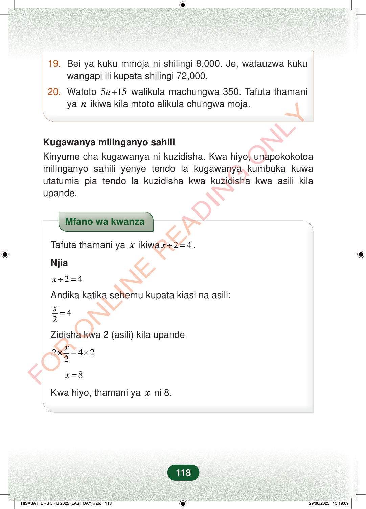

19.Bei ya kuku mmoja ni shilingi 8,000. Je, watauzwa kukuwangapi ili kupata shilingi 72,000.20.Watoto515n+walikula machungwa 350. Tafuta thamaniyanikiwa kila mtoto alikula chungwa moja.Kugawanya milinganyo sahiliKinyume cha kugawanya ni kuzidisha. Kwa hiyo, unapokokotoamilinganyo sahili yenye tendo la kugawanya kumbuka kuwautatumia pia tendo la kuzidisha kwa kuzidisha kwa asili kilaupande.Mfano wa kwanzaTafuta thamani yaxikiwa24x÷=.Njia24x÷=Andika katika sehemu kupata kiasi na asili:42x=Zidisha kwa 2 (asili) kila upande2422x×=×8x=Kwa hiyo, thamani yaxni 8.118
19. Bei ya kuku mmoja ni shilingi 8,000. Je, watauzwa kuku wangapi ili kupata shilingi 72,000.
20. Watoto 5 15 n + walikula machungwa 350. Tafuta thamani ya n ikiwa kila mtoto alikula chungwa moja.
Kugawanya milinganyo sahili Kinyume cha kugawanya ni kuzidisha. Kwa hiyo, unapokokotoa milinganyo sahili yenye tendo la kugawanya kumbuka kuwa utatumia pia tendo la kuzidisha kwa kuzidisha kwa asili kila upande.
Mfano wa kwanza
Tafuta thamani ya x ikiwa 2 4 x ÷ = .
Njia
2 4 x ÷ =
Andika katika sehemu kupata kiasi na asili:
4 2 x =
Zidisha kwa 2 (asili) kila upande
2 4 2 2 x × = ×
8 x =
Kwa hiyo, thamani ya x ni 8.
118
Maswali mawili ya hesabu: kuku mmoja ni shilingi 8,000 na Je atauza kuku wangapi apate shilingi 72,000; pia watoto 5n + 15 walikula machungwa 350, tafuta n kama kila mtoto alikula chungwa moja.19. Bei ya kuku mmoja ni shilingi 8,000.Je, watauzwa kuku wangapi ili kupata shilingi 72,000.20. Watoto <math><mrow><mn>5</mn><mi>n</mi><mo>+</mo><mn>15</mn></mrow></math> walikula machungwa 350.Tafuta thamani ya <math><mi>n</mi></math> ikiwa kila mtoto alikula chungwa moja.Kugawanya milinganyo sahiliKinyume cha kugawanya ni kuzidisha.Kwa hiyo, unapokokotoa milinganyo sahili yenye tendo la kugawanya kumbuka kuwa utatumia pia tendo la kuzidisha kwa kuzidisha kwa asili kila upande.Mfano wa kwanza wa kutafuta thamani ya x ikiwa x ÷ 2 = 4. Hatua zinaonyesha kuandika x juu ya 2, kuzidisha pande zote kwa 2, na kupata x = 8.Mfano wa kwanzaTafuta thamani ya <math><mi>x</mi></math> ikiwa <math><mrow><mi>x</mi><mo>÷</mo><mn>2</mn><mo>=</mo><mn>4</mn></mrow></math>.Njia<math><mrow><mi>x</mi><mo>÷</mo><mn>2</mn><mo>=</mo><mn>4</mn></mrow></math>Andika katika sehemu kupata kiasi na asili:<math><mrow><mfrac><mi>x</mi><mn>2</mn></mfrac><mo>=</mo><mn>4</mn></mrow></math>Zidisha kwa 2 (asili) kila upande<math><mrow><mn>2</mn><mo>×</mo><mfrac><mi>x</mi><mn>2</mn></mfrac><mo>=</mo><mn>4</mn><mo>×</mo><mn>2</mn></mrow></math>x = 8Kwa hiyo, thamani ya <math><mi>x</mi></math> ni 8.